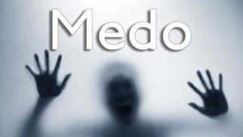

Medo e suas consequencias
-
Insegurança
-

medo
-
transtorno
INSEGURANÇA
Cada vez mais presente em nosso dia a dia, as raízes que sustentam o sentimento de insegurança aparecem na forma de diversas crenças limitantes.
Então, essas crenças, fundadas nas nossas relações interpessoais e no ambiente em que nos inserimos, nos colocam em um estado emocional de medo e apatia fazendo com que o individuo perca o prazer nas atividades do dia a dia.
Além disso, a insegurança, em um contexto geral, é melhor definida quando comparada com o seu oposto: a segurança.
Enquanto a segurança nos remete a uma ideia de conforto, tranquilidade e certeza, a insegurança nos remete a uma falta de todos esses elementos. Assim, a insegurança é um sentimento que se liga ao medo e à incerteza.
MEDO
Presentemente vivemos num ambiente de medo. O medo do Coronavírus que apesar de não o vermos, sabemos que existe e que nos pode matar, o medo do desconfinamento e da sensibilização de cada um perante este facto, o medo das repercussões económicas, o medo de outras vagas da pandemia que podem surgir, o medo do futuro. Sentir medo não é um sentimento bom, não ajuda e não há ninguém que não tenha sentido essa sensação. No entanto, não é uma especificidade do ser humano, visto que todos nós já verificámos, em inúmeras ocasiões de perigo, comportamentos de medo em várias espécies de animais.
TRANSTORNO
Os transtornos são condições de ordem psicológica e/ou mental que geram comprometimento na vida normal de uma pessoa. Essas alterações mentais são tratadas, geralmente, por psicólogos e psiquiatras e têm aumentado na atualidade devido a situações do dia a dia, como o estresse. Como exemplo de transtornos, podemos citar o Transtorno Bipolar, Transtorno de Deficit de Atenção e Hiperatividade, Transtorno Obsessivo Compulsivo e Transtorno de Personalidade.